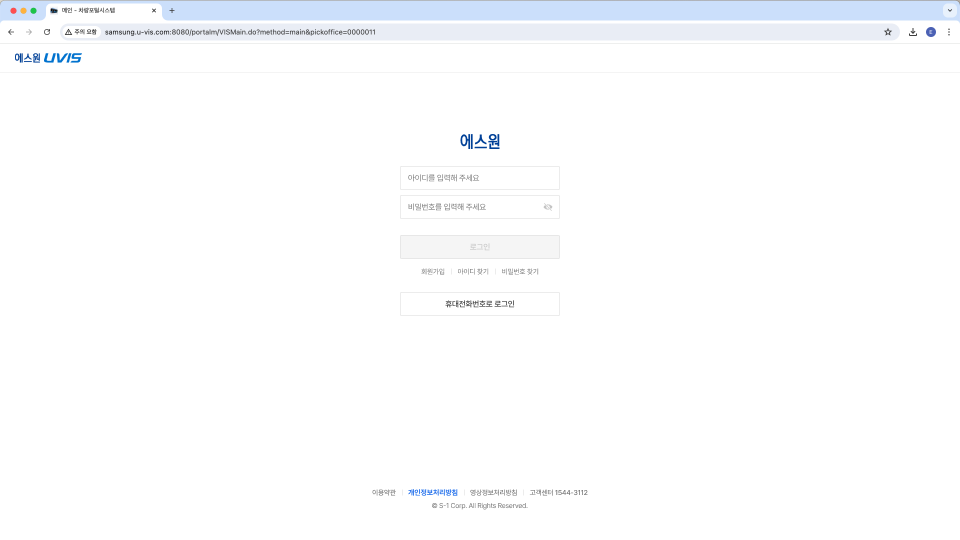
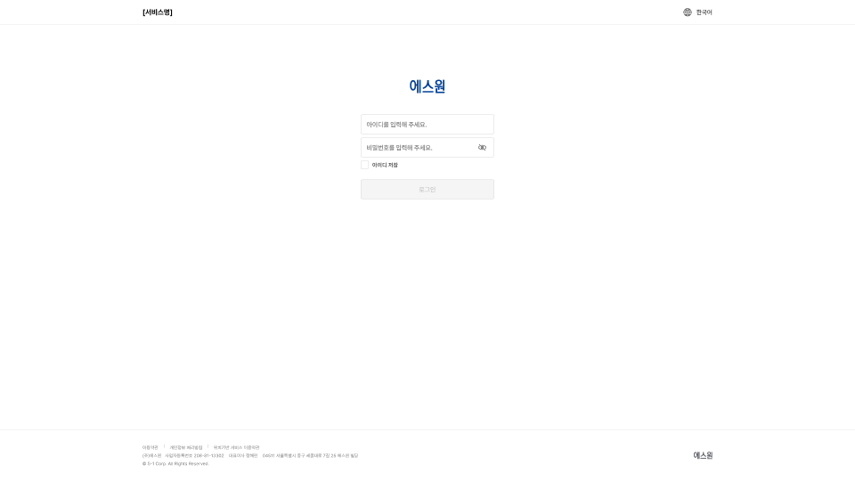

기준 자료는 맨 위에 브라우저 창틀(88)이 그려져 있어 전체가 그만큼 내려가 보입니다.
「창틀 맞춰 겹치기」에서 맨 위 줄 끝을 맞춰 겹쳐 보면 실제 차이만 남습니다.


| 항목 | 기준 | 지금 |
|---|---|---|
| 맨 위 줄 끝 → 로고 | 123 | 123 |
| 로고 → 아이디 칸 | 34 | 48 |
| 입력칸 크기 | 320 × 48 | 300 × 44 |
| 칸 사이 | 10 | 8 |
| 비밀번호 칸 → 로그인 버튼 | 32 | 8 + 아이디 저장 + 24 |
| 버튼 크기 | 320 × 48 | 300 × 44 |
| 버튼 아래 | 찾기 링크 3개 · 휴대전화번호로 로그인 | 없음 |
| 브라우저 창틀 | 있음 (88) | 없음 |